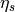
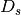
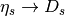

This module contains tools that facilitate least-squares fits, as functions of time t, of simulation (or other statistical) data for 2-point and 3-point correlators of the form:
Gab(t) = <b(t) a(0)>
Gavb(t,T) = <b(T) V(t) a(0)>
where T > t > 0. Each correlator is modeled using corrfitter.Corr2 for 2-point correlators, or corrfitter.Corr3 for 3-point correlators in terms of amplitudes for each source a, sink b, and vertex V, and the energies associated with each intermediate state. The amplitudes and energies are adjusted in the least-squares fit to reproduce the data; they are defined in a shared prior (typically a dictionary).
An object of type corrfitter.CorrFitter describes a collection of correlators and is used to fit multiple models to data simultaneously. Fitting multiple correlators simultaneously is important if there are statistical correlations between the correlators. Any number of correlators may be described and fit by a single corrfitter.CorrFitter object.
We now review the basic features of corrfitter. These features are also illustrated in the context of a real application in an Annotated Example, at the end.
To illustrate, consider data for two 2-point correlators: Gaa with the same source and sink (a), and Gab which has source a and (different) sink b. The data are contained in a dictionary data, where data['Gaa'] and data['Gab'] are one-dimensional arrays containing values for Gaa(t) and Gab(t), respectively, with t=0,1,2...63. Each array element in data['Gaa'] and data['Gab'] is a gaussian random variable of type gvar.GVar, and specifies the mean and standard deviation for the corresponding data point:
>>> print data['Gaa']
[0.159791 +- 4.13311e-06 0.0542088 +- 3.06973e-06 ... ]
>>> print data['Gab']
[0.156145 +- 1.83572e-05 0.102335 +- 1.5199e-05 ... ]
gvar.GVars can also capture any statistical correlations between different pieces of data.
We want to fit this data to the following formulas:
Gaa(t,N) = sum_i=0..N-1 a[i]**2 * exp(-E[i]*t)
Gab(t,N) = sum_i=0..N-1 a[i]*b[i] * exp(-E[i]*t)
Our goal is to find values for the amplitudes, a[i] and b[i], and the energies, E[i], so that these formulas reproduce the average values for Gaa(t,N) and Gab(t,N) that come from the data, to within the data’s statistical errors. We use the same a[i]s and E[i]s in both formulas. The fit parameters used by the fitter are the a[i]s and b[i]s, as well as the differences dE[i]=E[i]-E[i-1] for i>0 and dE[0]=E[0]. The energy differences are usually positive by construction (see below) and are easily converted back to energies using:
E[i] = sum_j=0..i dE[j]
A typical code has the following structure:
from corrfitter import CorrFitter
data = make_data('mcfile') # user-supplied routine
models = make_models() # user-supplied routine
N = 4 # number of terms in fit functions
prior = make_prior(N) # user-supplied routine
fitter = CorrFitter(models=models)
fit = fitter.lsqfit(data=data, prior=prior) # do the fit
print_results(fit, prior, data) # user-supplied routine
We discuss each user-supplied routine in turn.
make_data('mcfile') creates the dictionary containing the data that is to be fit. Typically such data comes from a Monte Carlo simulation. Imagine that the simulation creates a file called 'mcfile' with layout
# first correlator: each line has Gaa(t) for t=0,1,2...63
Gaa 0.159774739530e+00 0.541793561501e-01 ...
Gaa 0.159751906801e+00 0.542054488624e-01 ...
Gaa ...
.
.
.
# second correlator: each line has Gab(t) for t=0,1,2...63
Gab 0.155764170032e+00 0.102268808986e+00 ...
Gab 0.156248435021e+00 0.102341455176e+00 ...
Gab ...
.
.
.
where each line is one Monte Carlo measurement for one or the other correlator, as indicated by the tags at the start of each line. (Lines for Gab may be interspersed with lines for Gaa since every line has a tag.) The data can be analyzed using the gvar.dataset module:
import gvar
def make_data(filename):
dset = gvar.dataset.Dataset(filename)
return gvar.dataset.avg_data(dset)
This reads the data from file into a dataset object (type gvar.dataset.Dataset) and then computes averages for each correlator and t, together with a covariance matrix for the set of averages. Thus data = make_data('mcfile') creates a dictionary where data['Gaa'] is a 1-d array of gvar.GVars obtained by averaging over the Gaa data in the 'mcfile', and data['Gab'] is a similar array for the Gab correlator.
make_models() identifies which correlators in the fit data are to be fit, and specifies theoretical models (that is, fit functions) for these correlators:
from corrfitter import Corr2
def make_models():
models = [ Corr2(datatag='Gaa', tdata=range(64), tfit=range(64),
a='a', b='a', dE='dE'),
Corr2(datatag='Gab', tdata=range(64), tfit=range(64),
a='a', b='b', dE='dE')
]
return models
For each correlator, we specify: the key used in the input data dictionary data for that correlator (datatag); the values of t for which results are given in the input data (tdata); the values of t to keep for fits (tfit, here the same as the range in the input data, but could be any subset); and fit-parameter labels for the source (a) and sink (b) amplitudes, and for the intermediate energy-differences (dE). Fit-parameter labels identify the parts of the prior, discussed below, corresponding to the actual fit parameters (the labels are dictionary keys). Here the two models, for Gaa and Gab, are identical except for the data tags and the sinks. make_models() returns a list of models; the only parts of the input fit data that are fit are those for which a model is specified in make_models().
Note that if there is data for Gba(t,N) in addition to Gab(t,N), and Gba = Gab, then the (weighted) average of the two data sets will be fit if models[1] is replace by:
Corr2(datatag='Gab', tdata=range(64), tfit=range(64),
a=('a', None), b=('b', None), dE=('dE', None),
othertags=['Gba'])
The additional argument othertags lists other data tags that correspond to the same physical quantity; the data for all equivalent data tags is averaged before fitting (using lsqfit.wavg()). Alternatively (and equivalently) one could add a third Corr2 to models for Gba, but it is more efficient to combine it with Gab in this way if they are equivalent.
This routine defines the fit parameters that correspond to each fit-parameter label used in make_models() above. It also assigns a priori values to each parameter, expressed in terms of gaussian random variables (gvar.GVars), with a mean and standard deviation. The prior is built using class gvar.BufferDict:
import gvar
def make_prior(N):
prior = gvar.BufferDict() # prior = {} works too
prior['a'] = [gvar.gvar(0.1, 0.5) for i in range(N)]
prior['b'] = [gvar.gvar(1., 5.) for i in range(N)]
prior['dE'] = [gvar.gvar(0.25, 0.25) for i in range(N)]
return prior
(gvar.BufferDict can be replaced by an ordinary Python dictionary; it is used here because it remembers the order in which the keys are added.) make_prior(N) associates arrays of N gaussian random variables (gvar.GVars) with each fit-parameter label, enough for N terms in the fit function. These are the a priori values for the fit parameters, and they can be retrieved using the label: setting prior=make_prior(N), for example, implies that prior['a'][i], prior['b'][i] and prior['dE'][i] are the a priori values for a[i], b[i] and dE[i] in the fit functions (see above). The a priori value for each a[i] here is set to 0.1+-0.5, while that for each b[i] is 1+-5:
>>> print prior['a']
[0.1 +- 0.5 0.1 +- 0.5 0.1 +- 0.5 0.1 +- 0.5]
>>> print prior['b']
[1 +- 5 1 +- 5 1 +- 5 1 +- 5]
Similarly the a priori value for each energy difference is 0.25+-0.25. (See the lsqfit documentation for further information on priors.)
The actual fit is done by fit=fitter.lsqfit(...), which also prints out a summary of the fit results (this output can be suppressed if desired). Further results are reported by print_results(fit, prior, data): for example,
def print_results(fit, prior, data):
a = fit.p['a'] # array of a[i]s
b = fit.p['b'] # array of b[i]s
dE = fit.p['dE'] # array of dE[i]s
E = [sum(dE[:i+1]) for i in range(len(dE))] # array of E[i]s
print 'Best fit values:
print ' a[0] =',a[0]
print ' b[0] =',b[0]
print ' E[0] =',E[0]
print 'b[0]/a[0] =',b[0]/a[0]
outputs = {'E0':E[0], 'a0':a[0], 'b0':b[0], 'b0/a0':b[0]/a[0]}
inputs = {'a'=prior['a'], 'b'=prior['b'], 'dE'=prior['dE'],
'data'=[data[k] for k in data])
print fit.fmt_errorbudget(outputs, inputs)
The best-fit values from the fit are contained in fit.p and are accessed using the labels defined in the prior and the corrfitter.Corr2 models. Variables like a[0] and E[0] are gvar.GVar objects that contain means and standard deviations, as well as information about any correlations that might exist between different variables (which is relevant for computing functions of the parameters, like b[0]/a[0] in this example).
The last line of print_results(fit,prior,data) prints an error budget for each of the best-fit results for a[0], b[0], E[0] and b[0]/a[0], which are identified in the print output by the labels 'a0', 'b0', 'E0' and 'b0/a0', respectively. The error for any fit result comes from uncertainties in the inputs — in particular, from the fit data and the priors. The error budget breaks the total error for a result down into the components coming from each source. Here the sources are the a priori errors in the priors for the 'a' amplitudes, the 'b' amplitudes, and the 'dE' energy differences, as well as the errors in the fit data data. These sources are labeled in the print output by 'a', 'b', 'dE', and 'data', respectively. (See the gvar/lsqfit tutorial for further details on partial standard deviations and gvar.fmt_errorbudget().)
Plots of the fit data divided by the fit function, for each correlator, are displayed by calling fitter.display_plots() provided the matplotlib module is present.
Good fits often require fit functions with several exponentials and many parameters. Such fits can be costly. One strategy that can speed things up is to use fits with fewer terms to generate estimates for the most important parameters. These estimates are then used as starting values for the full fit. The smaller fit is usually faster, because it has fewer parameters, but the fit is not adequate (because there are too few parameters). Fitting the full fit function is usually faster given reasonable starting estimates, from the smaller fit, for the most important parameters. Continuing with the example from the previous section, the code
data = make_data('mcfile')
fitter = CorrFitter(models=make_models())
p0 = None
for N in [1,2,3,4,5,6,7,8]:
prior = make_prior(N)
fit = fitter.lsqfit(data=data, prior=prior, p0=p0)
print_results(fit, prior, data)
p0 = fit.pmean
does fits using fit functions with N=1...8 terms. Parameter mean-values fit.pmean from the fit with N exponentials are used as starting values p0 for the fit with N+1 exponentials, hopefully reducing the time required to find the best fit for N+1.
Priors used in corrfitter.CorrFitter assign an a priori gaussian/normal distribution to each parameter. It is possible instead to assign a log-normal distribution, which forces the corresponding parameter to be positive. This is done by choosing a label in the prior that begins with “log”: for example, 'logdE' instead of 'dE'. The fitter implements the log-normal distribution by using the parameter’s logarithm, instead of the parameter itself, as the new fit parameter; the logarithm has a gaussian/normal distribution. The original parameter is recovered inside the fit function (and elsewhere) by taking the exponential of the new fit parameter.
Using log-normal distributions where possible can significantly improve the stability of a fit. This is because otherwise the fit function typically has many symmetries that lead to large numbers of equivalent but different best fits. For example, the fit functions Gaa(t,N) and Gab(t,N) above are unchanged by exchanging a[i], b[i] and E[i] with a[j], b[j] and E[j] for any i and j. We can remove this degeneracy by using a log-normal distribution for the dE[i]s since this guarantees that all dE[i]s are positive, and therefore that E[0],E[1],E[2]... are ordered (in decreasing order of importance to the fit at large t).
Another symmetry of Gaa and Gab, which leaves both fit functions unchanged, is replacing a[i],b[i] by -a[i],-b[i]. Yet another is to add a new term to the fit functions with a[k],b[k],dE[k] where a[k]=0 and the other two have arbitrary values. Both of these symmetries can be removed by using a log-normal distribution for the a[i] priors, thereby forcing all a[i]>0.
The log-normal distributions for the a[i] and dE[i] are introduced into the code example above by changing the corresponding labels in make_prior(N), and taking logarithms of the corresponding prior values:
from gvar import log # numpy.log() works too
def make_models(): # same as before
models = [ Corr2(datatag='Gaa', tdata=range(64), tfit=range(64),
a='a', b='a', dE='dE'),
Corr2(datatag='Gab', tdata=range(64), tfit=range(64),
a='a', b='b', dE='dE')
]
return models
def make_prior(N):
prior = gvar.BufferDict() # prior = {} works too
prior['loga'] = [log(gvar.gvar(0.1, 0.5)) for i in range(N)]
prior['b'] = [gvar.gvar(1., 5.) for i in range(N)]
prior['logdE'] = [log(gvar.gvar(0.25, 0.25)) for i in range(N)]
return prior
This replaces the original fit parameters, a[i] and dE[i], by new fit parameters, log(a[i]) and log(dE[i]). The a priori distributions for the logarithms are gaussian/normal, with priors of log(0.1+-0.5) and log(0.25+-0.25) for the log(a)s and log(dE)s respectively.
Note that the labels are unchanged here in make_models(). It is unnecessary to change labels in the models; corrfitter.CorrFitter will automatically connect the modified terms in the prior with the appropriate terms in the models. This allows one to switch back and forth between log-normal and normal distributions without changing the models — only the names in the prior need be changed. corrfitter.CorrFitter also supports “sqrt-normal” distributions, which are indicated by 'sqrt' at the start of a parameter-name in the prior; the actual parameter in the fit function is the square of this fit- parameter, and so is again positive.
Note also that only a few lines in print_results(fit,prior,data), above, would change had we used log-normal priors for a and dE:
from gvar import exp # numpy.exp() works too
...
a = fit.transformed_p['a']) # array of a[i]s
...
dE = fit.transformed_p['dE'] # array of dE[i]s
...
inputs = {'loga':prior['loga'], 'b':prior['b'], 'logdE':fit.prior['logdE'],
'data':[data[k] for k in data]}
...
Large complicated fits, where lots of models and data are fit simultaneously, can take a very long time. This is especially true if there are strong correlations in the data. Such correlations can also cause problems from numerical roundoff errors when the inverse of the data’s covariance matrix is computed for the chi**2 function, requiring large svd cuts which can degrade precision (see below). An alternative approach, that often leads to more robust and faster fits, is to used chained fits. In a chained fit, each model is fit by itself in sequence, but with the best-fit parameters from each fit serving as priors for fit parameters in the next fit. All parameters from one fit become fit parameters in the next, including those parameters that are not explicitly needed by the next fit (since they may be correlated with the input data for the next fit or with its priors). Statistical correlations between data/priors from different models are preserved throughout (this is essential to the method).
The results from a chained fit are identical to a standard simultaneous fit in the limit of large statistics (that is, in the gaussian limit), but a chained fit never involves fitting more than a single correlator at a time. Single-correlator fits are usually much faster than simultaneous multi-correlator fits, and roundoff errors (and therefore svd cuts) are much less of a problem. Consequently chained fits can be more accurate in practice than conventional simultaneous fits, especially for high-statistics data.
Converting to chained fits is trivial: simply replace fitter.lsqfit(...) by fitter.chained_lsqfit(...). The output from this function represents the results for the entire chain of fits, and so can be used in exactly the same way as the output from fitter.lsqfit() (and is usually quite similar, to within statistical errors). Results from the different links in the chain — that is, from the fits for individual models — can be accessed after the fit using fitter.chained_fits[datatag] where datatag is the data tag for the model of interest.
It is sometimes useful to follow a chained fit with an ordinary fit, but using the best-fit parameters from the chained fit as the prior for the ordinary fit: for example,
fit = fitter.chained_lsqfit(data=data, prior=prior)
fit = fitter.lsqfit(data=data, prior=fit.p, svdcut=1e-2)
where we have included a fairly large svd cut in the second fit to avoid possible problems with roundoff errors. The second fit should, in principle, have no effect on the results since it adds no new information. In some cases, however, it polishes the results by making small (compared to the errors) corrections that tighten up the overall fit. It is generally fairly fast since the prior (fit.p) is relatively narrow.
Often we care only about parameters in the leading term of the fit function, or just a few of the leading terms. The non-leading terms are needed for a good fit, but we are uninterested in the values of their parameters. In such cases the non-leading terms can be absorbed into the fit data, leaving behind only the leading terms to be fit (to the modified fit data) — non-leading parameters are, in effect, integrated out of the analysis, or marginalized. The errors in the modified data are adjusted to account for uncertainties in the marginalized terms, as specified by their priors. The resulting fit function has many fewer parameters, and so the fit can be much faster.
Continuing with the example in Faster Fits, imagine that Nmax=8 terms are needed to get a good fit, but we only care about parameter values for the first couple of terms. The code from that section can be modified to fit only the leading N terms where N<Nmax, while incorporating (marginalizing) the remaining, non-leading terms as corrections to the data:
Nmax = 8
data = make_data('mcfile')
models = make_models()
fitter = CorrFitter(models=make_models())
prior = make_prior(Nmax) # build priors for Nmax terms
p0 = None
for N in [1,2,3]:
fit = fitter.lsqfit(data=data, prior=prior, p0=p0, nterm=N) # fit N terms
print_results(fit, prior, data)
p0 = fit.pmean
Here the nterm parameter in fitter.lsqfit specifies how many terms are used in the fit functions. The prior specifies Nmax terms in all, but only parameters in nterm=N terms are varied in the fit. The remaining terms specified by the prior are automatically incorporated into the fit data by corrfitter.CorrFitter.
Remarkably this method is often as accurate with N=1 or 2 as a full Nmax-term fit with the original fit data; but it is much faster. If this is not the case, check for singular priors, where the mean is much smaller than the standard deviation. These can lead to singularities in the covariance matrix for the corrected fit data. Such priors are easily fixed: for example, use gvar.gvar(0.1,1.) rather than gvar.gvar(0.0,1.). In some situations an svd cut (see below) can also help.
Any 2-point correlator can be turned into a periodic function of t by specifying the period through parameter tp. Doing so causes the replacement (for tp>0)
exp(-E[i]*t) -> exp(-E[i]*t) + exp(-E[i]*(tp-t))
in the fit function. If tp is negative, the function is replaced by an anti-periodic function with period abs(tp) and (for tp<0):
exp(-E[i]*t) -> exp(-E[i]*t) - exp(-E[i]*(abs(tp)-t))
Also (or alternatively) oscillating terms can be added to the fit by modifying parameter s and by specifying sources, sinks and energies for the oscillating pieces. For example, one might want to replace the sum of exponentials with two sums
sum_i a[i]**2 * exp(-E[i]*t) - sum_i ao[i]**2 (-1)**t * exp(-Eo[i]*t)
in a (nonperiodic) fit function. Then an appropriate model would be, for example,
Corr2(datatag='Gaa', tdata=range(64), tfit=range(64),
a=('a','ao'), b=('a','ao'), dE=('logdE','logdEo'), s=(1,-1))
where ao and dEo refer to additional fit parameters describing the oscillating component. In general parameters for amplitudes and energies can be tuples with two components: the first describing normal states, and the second describing oscillating states. To omit one or the other, put None in place of a label. Parameter s[0] is an overall factor multiplying the non-oscillating terms, and s[1] is the corresponding factor for the oscillating terms.
Highly correlated data can lead to problems from numerical roundoff errors, particularly where the fit code inverts the covariance matrix when constructing the chi**2 function. Such problems show up as unexpectedly large chi**2 or fits that stall and appear never to converge. Such situations are usually improved by introducing an svd cut: for example,
fit = fitter.lsqfit(data=data, prior=prior, p0=p0, svdcut=1e-4)
Introducing an svd cut increases the effective errors and so is a conservative move. For more information about svd cuts see the lsqfit tutorial and documentation. Parameters svdcut and svdnum are used to specify an svd cut. (It is often useful to to set svdnum equal to the number of measurements used to determine the covariance matrix for G(t) since that is the largest number of eigenmodes possible in the covariance matrix.)
At large t, correlators are dominated by the term with the smallest E, and often it is only the parameters in that leading term that are needed. In such cases there is a very fast analysis that is often almost as accurate as a full fit. An example is:
from corrfitter import fastfit
data = make_data('mcfile') # user-supplied routine - fit data
N = 10 # number of terms in fit functions
prior = make_prior(N) # user-supplied routine - fit prior
model = Corr2(a=..., b=..., ...) # create model describing correlator
fit = fastfit(data=data, prior=prior, model=model)
print('E[0] =', fit.E) # E[0]
print('a[0]*b[0] =', fit.ampl) # a[0]*b[0]
print('chi2/dof =', fit.chi2/fit.dof) # good fit if of order 1 or less
print('Q =', fit.Q) # good fit if Q bigger than about 0.1
fastfit estimates E[0] by using the prior, in effect, to remove (marginalize) all terms from the correlator other than the E[0] term: so the data Gdata(t) for the correlator is replaced by, for example,
Gdata(t) - sum_i=1..N-1 a[i]*b[i] * exp(-E[i]*t)
where a[i], b[i], and E[i] for i>0 are replaced by their values in the prior. The modified prior is then fit by a single term, a[0] * b[0] * exp(-E[0]*t), which means that a fit is not necessary (since the functional form is so simple). It is important to check the chi**2 of the fit, to make sure the fit is good. If it is not, try restricting model.tfit to larger ts (fastfit averages estimates from all ts in model.tfit).
The marginalization of terms with larger Es allows the code to use information from much smaller ts than otherwise, increasing precision. It also quantifies the uncertainty caused by the existence of these terms. This simple analysis is a special case of the more general marginalization strategy discussed in Faster Fits, above.
Correlators Gavb(t,T) = <b(T) V(t) a(0)> can also be included in fits as functions of t. In the illustration above, for example, we might consider additional Monte Carlo data describing a form factor with the same intermediate states before and after V(t). Assuming the data is tagged by aVbT15 and describes T=15, the corresponding entry in the collection of models might then be:
Corr3(datatag='aVbT15', T=15, tdata=range(16), tfit=range(16),
Vnn='Vnn', # parameters for V
a='a', dEa='dE', # parameters for a->V
b='b', dEb='dE', # parameters for V->b
)
This models the Monte Carlo data for the 3-point function using the following formula:
sum_i,j a[i] * exp(-Ea[i]*t) * Vnn[i,j] * b[j] * exp(-Eb[j]*t)
where the Vnn[i,j]s are new fit parameters related to a->V->b form factors. Obviously multiple values of T can be studied by including multiple corrfitter.Corr3 models, one for each value of T. Either or both of the initial and final states can have oscillating components (include sa and/or sb), or can be periodic (include tpa and/or tpb). If there are oscillating states then additional Vs must be specified: Vno connecting a normal state to an oscillating state, Von connecting oscillating to normal states, and Voo connecting oscillating to oscillating states.
There are two cases that require special treatment. One is when simultaneous fits are made to a->V->b and b->V->a. Then the Vnn, Vno, etc. for b->V->a are the (matrix) transposes of the the same matrices for a->V->b. In this case the models for the two would look something like:
models = [
...
Corr3(datatag='aVbT15', T=15, tdata=range(16), tfit=range(16),
Vnn='Vnn', Vno='Vno', Von='Von', Voo='Voo',
a=('a','ao'), dEa=('dE','dEo'), sa=(1,-1), # a->V
b=('b','bo'), dEb=('dE','dEo'), sb=(1,-1) # V->b
),
Corr3(datatag='bVaT15', T=15, tdata=range(16), tfit=range(16),
Vnn='Vnn', Vno='Vno', Von='Von', Voo='Voo', transpose_V=True,
a=('b','bo'), dEa=('dE','dEo'), sa=(1,-1), # b->V
b=('a','ao'), dEb=('dE','dEo'), sb=(1,-1) # V->a
),
...
]
The same Vs are specified for the second correlator, but setting transpose_V=True means that the transpose of each matrix is used in the fit for that correlator.
The second special case is for fits to a->V->a where source and sink are the same. In that case, Vnn and Voo are symmetric matrices, and Von is the transpose of Vno. The model for such a case would look like:
Corr3(datatag='aVbT15', T=15, tdata=range(16), tfit=range(16),
Vnn='Vnn', Vno='Vno', Von='Vno', Voo='Voo', symmetric_V=True,
a=('a','ao'), dEa=('dE', 'dEo'), sa=(1, -1), # a->V
b=('a','ao'), dEb=('dE', 'dEo'), sb=(1, -1) # V->a
)
Here Vno and Von are set equal to the same matrix, but specifying symmetric_V=True implies that the transpose will be used for Von. Furthermore Vnn and Voo are symmetric matrices when symmetric_V==True and so only the upper part of each matrix is needed. In this case Vnn and Voo are treated as one-dimensional arrays with N(N+1)/2 elements corresponding to the upper parts of each matrix, where N is the number of exponentials (that is, the number of a[i]s).
A bootstrap analysis gives more robust error estimates for fit parameters and functions of fit parameters than the conventional fit when errors are large, or fluctuations are non-gaussian. A typical code looks something like:
import gvar as gv
import gvar.dataset as ds
from corrfitter import CorrFitter
# fit
dset = ds.Dataset('mcfile')
data = ds.avg_data(dset) # create fit data
fitter = Corrfitter(models=make_models())
N = 4 # number of terms in fit function
prior = make_prior(N)
fit = fitter.lsqfit(prior=prior, data=data) # do standard fit
print 'Fit results:'
print 'a',exp(fit.p['loga']) # fit results for 'a' amplitudes
print 'dE',exp(fit.p['logdE']) # fit results for 'dE' energies
...
...
# bootstrap analysis
print 'Bootstrap fit results:'
nbootstrap = 10 # number of bootstrap iterations
bs_datalist = (ds.avg_data(d) for d in dset.bootstrap_iter(nbootstrap))
bs = ds.Dataset() # bootstrap output stored in bs
for bs_fit in fitter.bootstrap_iter(bs_datalist): # bs_fit = lsqfit output
p = bs_fit.pmean # best fit values for current bootstrap iteration
bs.append('a', exp(p['loga'])) # collect bootstrap results for a[i]
bs.append('dE', exp(p['logdE']))# collect results for dE[i]
... # include other functions of p
...
bs = ds.avg_data(bs, bstrap=True) # medians + error estimate
print 'a', bs['a'] # bootstrap result for 'a' amplitudes
print 'dE', bs['dE'] # bootstrap result for 'dE' energies
....
This code first prints out the standard fit results for the 'a' amplitudes and 'dE' energies. It then makes 10 bootstrap copies of the original input data, and fits each using the best-fit parameters from the original fit as the starting point for the bootstrap fit. The variation in the best-fit parameters from fit to fit is an indication of the uncertainty in those parameters. This example uses a gvar.dataset.Dataset object bs to accumulate the results from each bootstrap fit, which are computed using the best-fit values of the parameters (ignoring their standard deviations). Other functions of the fit parameters could be included as well. At the end avg_data(bs, bstrap=True) finds median values for each quantity in bs, as well as a robust estimate of the uncertainty (to within 30% since nbootstrap is only 10).
The list of bootstrap data sets bs_datalist can be omitted in this example in situations where the input data has high statistics. Then the bootstrap copies are generated internally by fitter.bootstrap_iter() from the means and covariance matrix of the input data (assuming gaussian statistics).
Classes to describe new models are usually derived from corrfitter.BaseModel. These can be for fitting new types of correlators. They can also be used in other ways — for example, to add constraints. Imagine a situation where one wants to constrain the third energy (E2) in a fit to be 0.60(1). This can be accomplished by adding E2_Constraint() to the list of models in corrfitter.CorrFitter where:
import gvar
import corrfitter
class E2_Constraint(corrfitter.BaseModel):
def __init__(self):
super(E2_Constraint,self).__init__('E2-constraint') # data tag
def fitfcn(self,x,p):
dE = gvar.exp(p['logdE'])
return sum(dE[:3]) # E2 formula in terms of p
def builddata(self,d):
return gvar.gvar(0.6,0.01) # E2 value
def buildprior(self, prior, nterm):
return {}
Any number of constraints like this can be added to the list of models.
Note that this constraint could instead be built into the priors for logdE by introducing correlations between different parameters.
corrfitter.CorrFitter allows models to specify how many exponentials to include in the fit function (using parameters nterm, nterma and ntermb). If that number is less than the number of exponentials specified by the prior, the extra terms are incorporated into the fit data before fitting. The default procedure is to multiply the data by G(t,p,N)/G(t,p,max(N,Nmax)) where: G(p,t,N) is the fit function with N terms for parameters p and time t; N is the number of exponentials specified in the models; Nmax is the number of exponentials specified in the prior; and here parameters p are set equal to their values in the prior (correlated gvar.GVars).
An alternative implementation for the data correction is to add G(t,p,N)-G(t,p,max(N,Nmax)) to the data. This implementation is selected when parameter ratio in corrfitter.CorrFitter is set to False. Results are similar to the other implementation, though perhaps a little less robust.
Background information on the some of the fitting strategies used by corrfitter.CorrFitter can be found by doing web searches for “hep-lat/0110175” and “arXiv:1111.1363”. These are two papers by G.P. Lepage and collaborators whose published versions are: G.P. Lepage et al, Nucl.Phys.Proc.Suppl. 106 (2002) 12-20; and K. Hornbostel et al, Phys.Rev. D85 (2012) 031504.
Correlator objects describe theoretical models that are fit to correlator data by varying the models’ parameters.
A model object’s parameters are specified through priors for the fit. A model assigns labels to each of its parameters (or arrays of related parameters), and these labels are used to identify the corresponding parameters in the prior. Parameters can be shared by more than one model object.
A model object also specifies the data that it is to model. The data is identified by the data tag that labels it in the input file or gvar.dataset.Dataset.
Two-point correlators Gab(t) = <b(t) a(0)>.
corrfitter.Corr2 models the t dependence of a 2-point correlator Gab(t) using
Gab(t) = sn * sum_i an[i]*bn[i] * fn(En[i], t)
+ so * sum_i ao[i]*bo[i] * fo(Eo[i], t)
where sn and so are typically -1, 0, or 1 and
fn(E, t) = exp(-E*t) + exp(-E*(tp-t)) # tp>0 -- periodic
or exp(-E*t) - exp(-E*(-tp-t))# tp<0 -- anti-periodic
or exp(-E*t) # if tp is None (nonperiodic)
fo(E, t) = (-1)**t * fn(E, t)
The fit parameters for the non-oscillating piece of Gab (first term) are an[i], bn[i], and dEn[i] where:
dEn[0] = En[0] > 0
dEn[i] = En[i]-En[i-1] > 0 (for i>0)
and therefore En[i] = sum_j=0..i dEn[j]. The fit parameters for the oscillating pied are defined analogously: ao[i], bo[i], and dEo[i].
The fit parameters are specified by the keys corresponding to these parameters in a dictionary of priors supplied by corrfitter.CorrFitter. The keys are strings and are also used to access fit results. Any key that begins with “log” is assumed to refer to the logarithm of the parameter in question (that is, the exponential of the fit-parameter is used in the formula for Gab(t).) This is useful for forcing an, bn and/or dE to be positive.
When tp is not None and positive, the correlator is assumed to be symmetrical about tp/2, with Gab(t)=Gab(tp-t). Data from t>tp/2 is averaged with the corresponding data from t<tp/2 before fitting. When tp is negative, the correlator is assumed to be anti-symetrical about -tp/2.
| Parameters: |
|
|---|
Assemble fit data from dictionary data.
Extracts parts of array data[self.datatag] that are needed for the fit, as specified by self.tp and self.tfit. The entries in the (1-D) array data[self.datatag] are assumed to be gvar.GVars and correspond to the t``s in ``self.tdata.
Create fit prior by extracting relevant pieces of prior.
Priors for the fit parameters, as specificied by self.a etc., are copied from prior into a new dictionary for use by the fitter. If a key "XX" cannot be found in prior, the buildprior looks for one of "logXX", "log(XX)", "sqrtXX", or "sqrt(XX)" and includes the corresponding prior instead.
The number of terms kept in each part of the fit can be specified using nterm = (n, no) where n is the number of non-oscillating terms and no is the number of oscillating terms. Setting nterm = None keeps all terms.
Return fit function for parameters p.
Three-point correlators Gavb(t, T) = <b(T) V(t) a(0)>.
corrfitter.Corr3 models the t dependence of a 3-point correlator Gavb(t, T) using
Gavb(t, T) =
sum_i,j san*an[i]*fn(Ean[i],t)*Vnn[i,j]*sbn*bn[j]*fn(Ebn[j],T-t)
+sum_i,j san*an[i]*fn(Ean[i],t)*Vno[i,j]*sbo*bo[j]*fo(Ebo[j],T-t)
+sum_i,j sao*ao[i]*fo(Eao[i],t)*Von[i,j]*sbn*bn[j]*fn(Ebn[j],T-t)
+sum_i,j sao*ao[i]*fo(Eao[i],t)*Voo[i,j]*sbo*bo[j]*fo(Ebo[j],T-t)
where
fn(E, t) = exp(-E*t) + exp(-E*(tp-t)) # tp>0 -- periodic
or exp(-E*t) - exp(-E*(-tp-t))# tp<0 -- anti-periodic
or exp(-E*t) # if tp is None (nonperiodic)
fo(E, t) = (-1)**t * fn(E, t)
The fit parameters for the non-oscillating piece of Gavb (first term) are Vnn[i,j], an[i], bn[j], dEan[i] and dEbn[j] where, for example:
dEan[0] = Ean[0] > 0
dEan[i] = Ean[i]-Ean[i-1] > 0 (for i>0)
and therefore Ean[i] = sum_j=0..i dEan[j]. The parameters for the other terms are similarly defined.
| Parameters: |
|
|---|
Assemble fit data from dictionary data.
Extracts parts of array data[self.datatag] that are needed for the fit, as specified by self.tfit. The entries in the (1-D) array data[self.datatag] are assumed to be gvar.GVars and correspond to the t``s in ``self.tdata.
Create fit prior by extracting relevant pieces of prior.
Priors for the fit parameters, as specificied by self.a etc., are copied from prior into a new dictionary for use by the fitter. If a key "XX" cannot be found in prior, the buildprior looks for one of "logXX", "log(XX)", "sqrtXX", or "sqrt(XX)" and includes the corresponding prior instead.
The number of terms kept in each part of the fit can be specified using nterm = (n, no) where n is the number of non-oscillating terms and no is the number of oscillating terms. Setting nterm = None keeps all terms.
Return fit function for parameters p.
Base class for correlator models.
Derived classes must define methods fitfcn, buildprior, and builddata, all of which are described below. In addition they can have attributes:
corrfitter.CorrFitter builds fit data for the correlator by extracting the data in an input gvar.dataset.Dataset labelled by string datatag. This label is stored in the BaseModel and must be passed to its constructor.
(Optional) Array of abscissa values used in plots of the data and fit corresponding to the model. Plots are not made for a model that doesn’t specify this attribute.
Construct fit data.
Format of output must be same as format for fitfcn output.
| Parameters: | data (dictionary) – Dataset containing correlator data (see gvar.dataset). |
|---|
Extract fit prior from prior; resizing as needed.
If nterm is not None, the sizes of the priors may need adjusting so that they correspond to the values specified in nterm (for normal and oscillating pieces).
| Parameters: |
|
|---|
Compute fit function fit parameters p using nterm terms. “
| Parameters: |
|
|---|
corrfitter.CorrFitter objects are wrappers for lsqfit.nonlinear_fit() which is used to fit a collection of models to a collection of Monte Carlo data.
Nonlinear least-squares fitter for a collection of correlators.
| Parameters: |
|
|---|
Iterator that creates bootstrap copies of a corrfitter.CorrFitter fit using bootstrap data from list data_list.
A bootstrap analysis is a robust technique for estimating means and standard deviations of arbitrary functions of the fit parameters. This method creates an interator that implements such an analysis of list (or iterator) datalist, which contains bootstrap copies of the original data set. Each data_list[i] is a different data input for self.lsqfit() (that is, a dictionary containing fit data). The iterator works its way through the data sets in data_list, fitting the next data set on each iteration and returning the resulting lsqfit.LSQFit fit object. Typical usage, for an corrfitter.CorrFitter object named fitter, would be:
for fit in fitter.bootstrap_iter(datalist):
... analyze fit parameters in fit.p ...
| Parameters: |
|
|---|---|
| Returns: | Iterator that returns a lsqfit.LSQFit object containing results from the fit to the next data set in data_list. |
Build fit data, corrected for marginalized terms.
Create fit function, with support for log-normal,... priors.
Build correctly sized prior for fit.
Compute chained least-squares fit of the correlator models to data.
A chained fit fits data for each model sequentially, using the best-fit parameters of one fit as priors for fit parameters in the next fit. Results from the individual fits can be found in dictionary self.chained_fits, which is indexed by the m.datatags for the models m.
| Parameters: |
|
|---|
The following parameters overwrite the values specified in the corrfitter.CorrFitter constructor when set to anything other than None: nterm, svdcut, svdnum, tol, and maxit. Any further keyword arguments are passed on to lsqfit.nonlinear_fit(), which does the fit.
Collect results from last fit for plots, tables etc.
| Returns: | A dictionary with one entry per correlator model,
containing (t,G,dG,Gth,dGth) — arrays containing:t = times
G(t) = data averages for correlator at times t
dG(t) = uncertainties in G(t)
Gth(t) = fit function for G(t) with best-fit parameters
dGth(t) = uncertainties in Gth(t)
|
|---|
Show plots of data/fit-function for each correlator.
Assumes matplotlib is installed (to make the plots). Plots are shown for one correlator at a time. Press key n to see the next correlator; press key p to see the previous one; press key q to quit the plot and return control to the calling program; press a digit to go directly to one of the first ten plots. Zoom, pan and save using the window controls.
Compute least-squares fit of the correlator models to data.
| Parameters: |
|
|---|
The following parameters overwrite the values specified in the corrfitter.CorrFitter constructor when set to anything other than None: nterm, svdcut, svdnum, tol, and maxit. Any further keyword arguments are passed on to lsqfit.nonlinear_fit(), which does the fit.
Fast fit for the leading component of a Corr2.
This function class estimates En[0] and an[0]*bn[0] in a two-point correlator:
Gab(t) = sn * sum_i an[i]*bn[i] * fn(En[i], t)
+ so * sum_i ao[i]*bo[i] * fo(Eo[i], t)
where sn and so are typically -1, 0, or 1 and
fn(E, t) = exp(-E*t) + exp(-E*(tp-t)) # tp>0 -- periodic
or exp(-E*t) - exp(-E*(-tp-t))# tp<0 -- anti-periodic
or exp(-E*t) # if tp is None (nonperiodic)
fo(E, t) = (-1)**t * fn(E, t)
The correlator is specified by model, and prior is used to remove (marginalize) all terms other than the En[0] term from the data. This gives a corrected correlator Gc(t) that includes uncertainties due to the terms removed. Estimates of En[0] are given by:
Eeff(t) = arccosh(0.5*(Gc(t+1)+Gc(t-1))/Gc(t)),
The final estimate is the weighted average Eeff_avg of the Eeff(t)s for different ts. Similarly, an estimate for the product of amplitutes, an[0]*bn[0] is obtained from the weighted average of
Aeff(t) = Gc(t)/fn(Eeff_avg, t).
If osc=True, an estimate is returned for Eo[0] rather than En[0], and ao[0]*bo[0] rather than an[0]*bn[0]. These estimates are most reliable when Eo[0] is smaller than En[0] (and so dominates at large t).
The results of the fast fit are stored and returned in an object of type corrfitter.fastfit with the following attributies:
Estimate of En[0] (or Eo[0] if osc==True) computed from the weighted average of Eeff(t) for ts in model.tfit. The prior is also included in the weighted average.
Estimate of an[0]*bn[0] (or ao[0]*bo[0] if osc==True) computed from the weighted average of Aeff(t) for ts in model.tfit[1:-1]. The prior is also included in the weighted average.
chi[0] is the chi**2 for the weighted average of Eeff(t)s; chi[1] is the same for the Aeff(t)s.
dof[0] is the effective number of degrees of freedom in the weighted average of Eeff(t)s; dof[1] is the same for the Aeff(t)s.
Q[0] is the quality factor Q for the weighted average of Eeff(t)s; Q[1] is the same for the Aeff(t)s.
List of Eeff(t)s used in the weighted average to estimate E.
List of Aeff(t)s used in the weighted average to estimate ampl.
| Parameters: |
|
|---|
In addition an svd cut can be specified, as in corrfitter.CorrFitter, using parameters svdcut and svdnum. Also the type of marginalization use can be specified with parameter ratio (see corrfitter.CorrFitter).
In this section we describe a complete script that uses corrfitter to extract energies, amplitudes, and transition matrix elements for the  and  mesons. The source code (example.py) and data file (example.data) are included with the corrfitter distribution, in the examples/ directory.
The main method follows the pattern described in Faster Fits:
from __future__ import print_function # makes this work for python2 and 3
import gvar as gv
import numpy as np
import collections
from corrfitter import CorrFitter, Corr2, Corr3
def main():
data = make_data('example.data')
fitter = CorrFitter(models=make_models())
p0 = None
for N in [1, 2, 3, 4]:
print(30 * '=', 'nterm =', N)
prior = make_prior(N)
fit = fitter.lsqfit(data=data, prior=prior, p0=p0)
p0 = fit.pmean
print_results(fit, prior, data)
fitter.display_plots()
The raw Monte Carlo data is in a file named 'example.data'. We are doing four fits, with 1, 2, 3, and 4 terms in the fit function. Each fit starts its minimization at point p0, which is set equal to the mean values of the best-fit parameters from the previous fit (p0 = fit.pmean). This reduces the number of iterations needed for convergence in the N = 4 fit, for example, from 110 to 12. It also makes multi-term fits more stable.
The last line displays plots of the fit data divided by the fit, provided matplotlib is installed. A plot is made for each correlator, and the ratios should equal one to within errors. To move from one plot to the next press “n” on the keyboard; to move to a previous plot press “p”; to quit the plots press “q”.
We now look at each other major routine in turn.
Method make_data('example.data') reads in the Monte Carlo data, averages it, and formats it for use by corrfitter.CorrFitter. The data file ('example.data') contains 2260 lines, each with 64 numbers on it, of the form:
etas 0.3045088594E+00 0.7846334531E-01 0.3307295938E-01 ...
etas 0.3058093438E+00 0.7949004688E-01 0.3344648906E-01 ...
...
Each of these lines is a single Monte Carlo estimate for the correlator on a lattice with 64 lattice points in the t direction; there are 2260 Monte Carlo estimates in all. The same file also contains 2260 lines describing the meson correlator:
Ds 0.2303351094E+00 0.4445243750E-01 0.8941437344E-02 ...
Ds 0.2306766563E+00 0.4460026875E-01 0.8991960781E-02 ...
...
And it contains 2260 lines each giving the 3-point amplitude for  where the source and sink are separated by 15 and 16 time steps on the lattice:
3ptT15 0.4679643906E-09 0.1079643844E-08 0.2422032031E-08 ...
3ptT15 0.4927106406E-09 0.1162639109E-08 0.2596277812E-08 ...
...
3ptT16 0.1420718453E-09 0.3205214219E-09 0.7382921875E-09 ...
3ptT16 0.1501385469E-09 0.3478552344E-09 0.8107883594E-09 ...
...
The first, second, third, etc. lines for each label come from the first, second, third, etc. Monte Carlo iterations, respectively; this allows the code to compute correlations between different types of data.
We use the tools in gvar.dataset designed for reading files in this format:
def make_data(datafile):
""" Read data from datafile and average it. """
return gv.dataset.avg_data(gv.dataset.Dataset(datafile))
This routine returns a dictionary whose keys are the strings used to label the individual lines in example.data: for example,
>>> data = make_data('example.data')
>>> print(data['Ds'])
[0.230715 +- 5.21002e-06 0.0446524 +- 2.60723e-06 0.00899239 +- 1.02701e-06
...
0.0446529 +- 2.57709e-06]
>>> print(data['3ptT16'])
[1.45834e-10 +- 1.71924e-13 3.36366e-10 +- 3.75092e-13
...
2.31545e-05 +- 2.52032e-08]
Here each entry in data is an array of gvar.GVars representing the Monte Carlo estimates (mean and covariance) for the corresponding correlator. This is the format needed by corrfitter.CorrFitter.
Method make_models() specifies the theoretical models that will be used to fit the data:
def make_models():
""" Create models to fit data. """
tmin = 5
tp = 64
models = [
Corr2(
datatag='etas',
tp=tp, tdata=range(tmin), tfit=range(tmin, tp-tmin),
a='etas:a', b='etas:a', dE='etas:dE'
),
Corr2(
datatag='Ds',
tp=tp, tdata=range(tmin), tfit=range(tmin, tp-tmin),
a=('Ds:a', 'Ds:ao'), b=('Ds:a', 'Ds:ao'),
dE=('Ds:dE', 'Ds:dEo'), s=(1., -1.)
),
Corr3(
datatag='3ptT15',
tdata=range(16), T=15, tfit=range(tmin, 16-tmin),
a='etas:a', dEa='etas:dE', tpa=tp,
b=('Ds:a', 'Ds:ao'), dEb=('Ds:dE', 'Ds:dEo'), tpb=tp, sb=(1, -1.),
Vnn='Vnn', Vno='Vno'
),
Corr3(
datatag='3ptT16',
tdata=range(17), T=16, tfit=range(tmin, 17-tmin),
a='etas:a', dEa='etas:dE', tpa=tp,
b=('Ds:a', 'Ds:ao'), dEb=('Ds:dE', 'Ds:dEo'), tpb=tp, sb=(1, -1.),
Vnn='Vnn', Vno='Vno'
)
]
return models
Four models are specified, one for each correlator to be fit. The first two are for the and two-point correlators, corresponding to entries in the data dictionary with keys 'etas' and 'Ds', respectively. These are periodic propagators, with period 64 (tp), and we want to omit the first and last 5 (tmin) time steps in the correlator. The ts to be fit are listed in tfit, while the ts contained in the data are in tdata. Labels for the fit parameters corresponding to the sources (and sinks) are specified for each, 'etas:a' and 'Ds:a', as are labels for the energy differences, 'etas:dE' and 'Ds:dE'. The propagator also has an oscillating piece because this data comes from a staggered-quark analysis. Sources/sinks and energy differences are specified for these as well: 'Ds:ao' and 'Ds:dEo'.
Finally three-point models are specifies for the data corresponding to data-dictionary keys '3ptT15' and '3ptT16'. These share several parameters with the two-point correlators, but introduce new parameters for the transition elements: 'Vnn' connecting normal states, and 'Vno' connecting normal states with oscillating states.
Method make_prior(N) creates a priori estimates for each fit parameter, to be used as priors in the fitter:
def make_prior(N):
""" Create priors for fit parameters. """
prior = gv.BufferDict()
# etas
metas = gv.gvar('0.4(2)')
prior['log(etas:a)'] = gv.log(gv.gvar(N * ['0.3(3)']))
prior['log(etas:dE)'] = gv.log(gv.gvar(N * ['0.5(5)']))
prior['log(etas:dE)'][0] = gv.log(metas)
# Ds
mDs = gv.gvar('1.2(2)')
prior['log(Ds:a)'] = gv.log(gv.gvar(N * ['0.3(3)']))
prior['log(Ds:dE)'] = gv.log(gv.gvar(N * ['0.5(5)']))
prior['log(Ds:dE)'][0] = gv.log(mDs)
# Ds -- oscillating part
prior['log(Ds:ao)'] = gv.log(gv.gvar(N * ['0.1(1)']))
prior['log(Ds:dEo)'] = gv.log(gv.gvar(N * ['0.5(5)']))
prior['log(Ds:dEo)'][0] = gv.log(mDs + gv.gvar('0.3(3)'))
# V
prior['Vnn'] = gv.gvar(N * [N * ['0(1)']])
prior['Vno'] = gv.gvar(N * [N * ['0(1)']])
return prior
Parameter N specifies how many terms are kept in the fit functions. The priors are specified in a dictionary prior. Each entry is an array, of length N, with one entry for each term. Each entry is a gaussian random variable, specified by an object of type gvar.GVar. Here we use the fact that gvar.gvar() can make a list of gvar.GVars from a list of strings of the form '0.1(1)': for example,
>>> print(gv.gvar(['1(2)', '3(2)']))
[1 +- 2 3 +- 2]
In this particular fit, we can assume that all the sinks/sources are positive, and we can require that the energy differences be positive. To force positivity, we use log-normal distributions for these parameters by defining priors for 'log(etas:a)', 'log(etas:dE)',... rather than 'etas:a', 'etas:dE',... (see Faster Fits — Postive Parameters). The a priori values for these fit parameters are the logarithms of the values for the parameters themselves: for example, each etas:a' has prior 0.3(3), while the actual fit parameters, log(etas:a), have priors log(0.3(3)) = -1.2(1.0).
We override the default priors for the ground-state energies in each case. This is not unusual since dE[0], unlike the other dEs, is an energy, not an energy difference. For the oscillating state, we require that its mass be 0.3(3) larger than the mass. One could put more precise information into the priors if that made sense given the goals of the simulation. For example, if the main objective is a value for Vnn, one might include fairly exact information about the and masses in the prior, using results from experiment or from earlier simulations. This would make no sense, however, if the goal is to verify that simulations gives correct masses.
Note, finally, that a statement like
prior['Vnn'] = gv.gvar(N * [N* ['0(1)']]) # correct
is not the same as
prior['Vnn'] = N * [N * [gv.gvar('0(1)')]] # wrong
The former creates N ** 2 independent gvar.GVars, with one for each element of Vnn; it is one of the most succinct ways of creating a large number of gvar.GVars. The latter creates only a single gvar.GVar and uses it repeatedly for every element Vnn, thereby forcing every element of Vnn to be equal to every other element in the fit (since the difference between any two of their priors is 0 +- 0); it is almost certainly not what is desired. Usually one wants to create the array of strings first, and then convert it to gvar.GVars using gvar.gvar().
Method print_results(fit, prior, data) reports on the best-fit values for the fit parameters from the last fit:
def print_results(fit, prior, data):
print('Fit results:')
p = fit.transformed_p # best-fit parameterss
# etas
E_etas = np.cumsum(p['etas:dE'])
a_etas = p['etas:a'])
print(' Eetas:', ' '.join(gv.fmt(E_etas[:3])))
print(' aetas:', ' '.join(gv.fmt(a_etas[:3])))
# Ds
E_Ds = np.cumsum(p['Ds:dE'])
a_Ds = p['Ds:a'])
print('\n EDs:', ' '.join(gv.fmt(E_Ds[:3])))
print( ' aDs:', ' '.join(gv.fmt(a_Ds[:3])))
# Dso -- oscillating piece
E_Dso = np.cumsum(p['Ds:dEo'])
a_Dso = p['Ds:ao']
print('\n EDso:', ' '.join(gv.fmt(E_Dso[:3])))
print( ' aDso:', ' '.join(gv.fmt(a_Dso[:3])))
# V
Vnn = p['Vnn']
Vno = p['Vno']
print('\n etas->V->Ds:', Vnn[0, 0].fmt())
print(' etas->V->Dso:', Vno[0, 0].fmt())
# error budget
outputs = gv.BufferDict()
outputs['metas'] = E_etas[0]
outputs['mDs'] = E_Ds[0]
outputs['mDso-mDs'] = E_Dso[0] - E_Ds[0]
outputs['Vnn'] = Vnn[0, 0]
outputs['Vno'] = Vno[0, 0]
inputs = collections.OrderedDict()
inputs['statistics'] = data # statistical errors in data
inputs.update(prior) # all entries in prior
inputs['svd'] = fit.svdcorrection # svd cut (if present)
print('\n' + gv.fmt_values(outputs))
print(gv.fmt_errorbudget(outputs, inputs))
print('\n')
The best-fit parameter values are stored in dictionary p=fit.transformed_p, as are the exponentials of the log-normal parameters. We also turn energy differences into energies using numpy‘s cummulative sum function numpy.cumsum(). We use gvar.fmt() to convert arrays of gvar.GVars into arrays of strings representing those gaussian variables with the format, for example, 1.55(41); and we use join() to join these into a single output string. The final output is:
Fit results:
Eetas: 0.416221(81) 1.055(62) 1.55(41)
aetas: 0.21841(11) 0.205(55) 0.30(17)
EDs: 1.20171(13) 1.707(21) 2.22(22)
aDs: 0.21477(18) 0.275(26) 0.44(18)
EDso: 1.446(14) 1.68(12) 2.17(44)
aDso: 0.0660(77) 0.083(33) 0.117(93)
etas->V->Ds = 0.76744(90)
etas->V->Dso = -0.777(75)
Finally we create an error budget for the and masses, for the mass difference between the and its opposite-parity partner, and for the ground-state transition amplitudes Vnn and Vno. The quantities of interest are specified in dictionary outputs. For the error budget, we need another dictionary, inputs, specifying various inputs to the calculation: the Monte Carlo data, the priors, and the results from any svd cuts (none here). Each of these inputs contributes to the errors in the final results, as detailed in the error budget:
Values:
metas: 0.416221(81)
mDs: 1.20171(13)
mDso-mDs: 0.244(14)
Vnn: 0.76744(90)
Vno: -0.777(75)
Partial % Errors:
metas mDs mDso-mDs Vnn Vno
----------------------------------------------------------------------
statistics: 0.02 0.01 4.03 0.11 7.01
log(etas:a): 0.00 0.00 0.06 0.00 0.05
log(etas:dE): 0.00 0.00 0.03 0.00 0.06
log(Ds:a): 0.00 0.00 0.65 0.02 0.47
log(Ds:dE): 0.00 0.00 0.66 0.02 0.25
log(Ds:ao): 0.00 0.00 1.11 0.01 3.88
log(Ds:dEo): 0.00 0.00 1.21 0.01 4.47
Vnn: 0.00 0.00 0.80 0.03 1.01
Vno: 0.00 0.00 3.70 0.01 2.70
svd: 0.00 0.00 0.00 0.00 0.00
----------------------------------------------------------------------
total: 0.02 0.01 5.84 0.12 9.63
The error budget shows, for example, that the largest sources of uncertainty in every quantity are the statistical errors in the input data.
The output from running this code is as follows:
============================== nterm = 1
Least Square Fit:
chi2/dof [dof] = 6.3e+03 [69] Q = 0 logGBF = -2.1405e+05 itns = 18
Parameters:
log(etas:a) 0 -1.41467 (24) [ -1.2 (1.0) ]
log(etas:dE) 0 -0.81108 (14) [ -0.92 (50) ]
log(Ds:a) 0 -1.37608 (18) [ -1.2 (1.0) ]
log(Ds:dE) 0 0.214374 (56) [ 0.18 (17) ]
log(Ds:ao) 0 -1.9192 (14) [ -2.3 (1.0) ]
log(Ds:dEo) 0 0.48264 (34) [ 0.41 (24) ]
Vnn 0,0 0.72035 (40) [ 0.0 (1.0) ]
Vno 0,0 -0.8100 (14) [ 0.0 (1.0) ]
Settings:
svdcut = (None,None) svdnum = (None,None) reltol/abstol = 1e-10/1e-10
============================== nterm = 2
Least Square Fit:
chi2/dof [dof] = 2.1 [69] Q = 3.4e-07 logGBF = 1562.3 itns = 45
Parameters:
log(etas:a) 0 -1.52073 (44) [ -1.2 (1.0) ]
1 -1.287 (15) [ -1.2 (1.0) ]
log(etas:dE) 0 -0.87641 (19) [ -0.92 (50) ]
1 -0.322 (10) [ -0.7 (1.0) ]
log(Ds:a) 0 -1.53867 (57) [ -1.2 (1.0) ]
1 -1.0814 (73) [ -1.2 (1.0) ]
log(Ds:dE) 0 0.183585 (89) [ 0.18 (17) ]
1 -0.5882 (58) [ -0.7 (1.0) ]
log(Ds:ao) 0 -2.5911 (77) [ -2.3 (1.0) ]
1 -1.195 (85) [ -2.3 (1.0) ]
log(Ds:dEo) 0 0.3749 (14) [ 0.41 (24) ]
1 -0.285 (44) [ -0.7 (1.0) ]
Vnn 0,0 0.76402 (44) [ 0.0 (1.0) ]
0,1 -0.4608 (56) [ 0.0 (1.0) ]
1,0 0.0754 (79) [ 0.0 (1.0) ]
1,1 -0.81 (85) [ 0.0 (1.0) ]
Vno 0,0 -0.6842 (77) [ 0.0 (1.0) ]
0,1 1.091 (81) [ 0.0 (1.0) ]
1,0 -1.07 (14) [ 0.0 (1.0) ]
1,1 0.0 (1.0) [ 0.0 (1.0) ]
Settings:
svdcut = (None,None) svdnum = (None,None) reltol/abstol = 1e-10/1e-10
============================== nterm = 3
Least Square Fit:
chi2/dof [dof] = 0.6 [69] Q = 1 logGBF = 1605.4 itns = 54
Parameters:
log(etas:a) 0 -1.52138 (50) [ -1.2 (1.0) ]
1 -1.61 (33) [ -1.2 (1.0) ]
2 -1.12 (37) [ -1.2 (1.0) ]
log(etas:dE) 0 -0.87654 (20) [ -0.92 (50) ]
1 -0.46 (12) [ -0.7 (1.0) ]
2 -0.70 (69) [ -0.7 (1.0) ]
log(Ds:a) 0 -1.53823 (85) [ -1.2 (1.0) ]
1 -1.290 (94) [ -1.2 (1.0) ]
2 -0.74 (32) [ -1.2 (1.0) ]
log(Ds:dE) 0 0.18374 (11) [ 0.18 (17) ]
1 -0.684 (41) [ -0.7 (1.0) ]
2 -0.62 (35) [ -0.7 (1.0) ]
log(Ds:ao) 0 -2.72 (12) [ -2.3 (1.0) ]
1 -2.49 (41) [ -2.3 (1.0) ]
2 -2.10 (77) [ -2.3 (1.0) ]
log(Ds:dEo) 0 0.369 (10) [ 0.41 (24) ]
1 -1.44 (51) [ -0.7 (1.0) ]
2 -0.71 (80) [ -0.7 (1.0) ]
Vnn 0,0 0.76744 (90) [ 0.0 (1.0) ]
0,1 -0.505 (39) [ 0.0 (1.0) ]
0,2 0.46 (50) [ 0.0 (1.0) ]
1,0 0.043 (44) [ 0.0 (1.0) ]
1,1 0.22 (80) [ 0.0 (1.0) ]
1,2 0.0 (1.0) [ 0.0 (1.0) ]
2,0 -0.07 (25) [ 0.0 (1.0) ]
2,1 0.0 (1.0) [ 0.0 (1.0) ]
2,2 0.0 (1.0) [ 0.0 (1.0) ]
Vno 0,0 -0.776 (75) [ 0.0 (1.0) ]
0,1 0.30 (34) [ 0.0 (1.0) ]
0,2 -0.01 (87) [ 0.0 (1.0) ]
1,0 0.22 (45) [ 0.0 (1.0) ]
1,1 0.07 (98) [ 0.0 (1.0) ]
1,2 0.0 (1.0) [ 0.0 (1.0) ]
2,0 -0.05 (97) [ 0.0 (1.0) ]
2,1 0.0 (1.0) [ 0.0 (1.0) ]
2,2 0.0 (1.0) [ 0.0 (1.0) ]
Settings:
svdcut = (None,None) svdnum = (None,None) reltol/abstol = 1e-10/1e-10
============================== nterm = 4
Least Square Fit:
chi2/dof [dof] = 0.6 [69] Q = 1 logGBF = 1605.9 itns = 12
Parameters:
log(etas:a) 0 -1.52137 (50) [ -1.2 (1.0) ]
1 -1.58 (27) [ -1.2 (1.0) ]
2 -1.21 (57) [ -1.2 (1.0) ]
3 -1.24 (97) [ -1.2 (1.0) ]
log(etas:dE) 0 -0.87654 (20) [ -0.92 (50) ]
1 -0.449 (96) [ -0.7 (1.0) ]
2 -0.71 (74) [ -0.7 (1.0) ]
3 -0.68 (98) [ -0.7 (1.0) ]
log(Ds:a) 0 -1.53821 (85) [ -1.2 (1.0) ]
1 -1.289 (94) [ -1.2 (1.0) ]
2 -0.81 (40) [ -1.2 (1.0) ]
3 -1.13 (99) [ -1.2 (1.0) ]
log(Ds:dE) 0 0.18374 (11) [ 0.18 (17) ]
1 -0.683 (41) [ -0.7 (1.0) ]
2 -0.66 (39) [ -0.7 (1.0) ]
3 -0.75 (99) [ -0.7 (1.0) ]
log(Ds:ao) 0 -2.72 (12) [ -2.3 (1.0) ]
1 -2.49 (40) [ -2.3 (1.0) ]
2 -2.15 (79) [ -2.3 (1.0) ]
3 -2.3 (1.0) [ -2.3 (1.0) ]
log(Ds:dEo) 0 0.3686 (99) [ 0.41 (24) ]
1 -1.45 (50) [ -0.7 (1.0) ]
2 -0.72 (79) [ -0.7 (1.0) ]
3 -0.7 (1.0) [ -0.7 (1.0) ]
Vnn 0,0 0.76744 (90) [ 0.0 (1.0) ]
0,1 -0.508 (41) [ 0.0 (1.0) ]
0,2 0.45 (51) [ 0.0 (1.0) ]
0,3 0.07 (99) [ 0.0 (1.0) ]
1,0 0.043 (45) [ 0.0 (1.0) ]
1,1 0.22 (80) [ 0.0 (1.0) ]
1,2 0.0 (1.0) [ 0.0 (1.0) ]
1,3 0.0 (1.0) [ 0.0 (1.0) ]
2,0 -0.08 (30) [ 0.0 (1.0) ]
2,1 0.0 (1.0) [ 0.0 (1.0) ]
2,2 0.0 (1.0) [ 0.0 (1.0) ]
2,3 0.0 (1.0) [ 0.0 (1.0) ]
3,0 -0.06 (99) [ 0.0 (1.0) ]
3,1 0.0 (1.0) [ 0.0 (1.0) ]
3,2 0.0 (1.0) [ 0.0 (1.0) ]
3,3 0.0 (1.0) [ 0.0 (1.0) ]
Vno 0,0 -0.777 (75) [ 0.0 (1.0) ]
0,1 0.30 (34) [ 0.0 (1.0) ]
0,2 0.00 (87) [ 0.0 (1.0) ]
0,3 0.0 (1.0) [ 0.0 (1.0) ]
1,0 0.21 (45) [ 0.0 (1.0) ]
1,1 0.07 (98) [ 0.0 (1.0) ]
1,2 0.0 (1.0) [ 0.0 (1.0) ]
1,3 0.0 (1.0) [ 0.0 (1.0) ]
2,0 -0.05 (97) [ 0.0 (1.0) ]
2,1 0.0 (1.0) [ 0.0 (1.0) ]
2,2 0.0 (1.0) [ 0.0 (1.0) ]
2,3 0.0 (1.0) [ 0.0 (1.0) ]
3,0 -0.0 (1.0) [ 0.0 (1.0) ]
3,1 0.0 (1.0) [ 0.0 (1.0) ]
3,2 0.0 (1.0) [ 0.0 (1.0) ]
3,3 0.0 (1.0) [ 0.0 (1.0) ]
Settings:
svdcut = (None,None) svdnum = (None,None) reltol/abstol = 1e-10/1e-10
Fit results:
Eetas: 0.416221(81) 1.055(62) 1.55(41)
aetas: 0.21841(11) 0.205(55) 0.30(17)
EDs: 1.20171(13) 1.707(21) 2.22(22)
aDs: 0.21477(18) 0.275(26) 0.44(18)
EDso: 1.446(14) 1.68(12) 2.17(44)
aDso: 0.0660(77) 0.083(33) 0.117(93)
etas->V->Ds = 0.76744(90)
etas->V->Dso = -0.777(75)
Values:
metas: 0.416221(81)
mDs: 1.20171(13)
mDso-mDs: 0.244(14)
Vnn: 0.76744(90)
Vno: -0.777(75)
Partial % Errors:
metas mDs mDso-mDs Vnn Vno
----------------------------------------------------------------------
statistics: 0.02 0.01 4.03 0.11 7.01
log(etas:a): 0.00 0.00 0.06 0.00 0.05
log(etas:dE): 0.00 0.00 0.03 0.00 0.06
log(Ds:a): 0.00 0.00 0.65 0.02 0.47
log(Ds:dE): 0.00 0.00 0.66 0.02 0.25
log(Ds:ao): 0.00 0.00 1.11 0.01 3.88
log(Ds:dEo): 0.00 0.00 1.21 0.01 4.47
Vnn: 0.00 0.00 0.80 0.03 1.01
Vno: 0.00 0.00 3.70 0.01 2.70
svd: 0.00 0.00 0.00 0.00 0.00
----------------------------------------------------------------------
total: 0.02 0.01 5.84 0.12 9.63
Note:
This is a relatively simple fit, taking only a couple of seconds on a laptop.
Fits with only one or two terms in the fit function are poor, with chi2/dofs that are significantly larger than one.
Fits with three terms work well, and adding futher terms has almost no impact. The chi**2 does not improve and parameters for the added terms differ little from their prior values (since the data are not sufficiently accurate to add new information).
Chained fits (see Faster Fits — Chained Fits) are used if fitter.lsqfit(...) is replaced by fitter.chained_lsqfit(...) in main(). The results are about the same, though slightly more accurate: for example,
Values:
metas: 0.416199(81)
mDs: 1.20164(14)
mDso-mDs: 0.2595(51)
Vnn: 0.76782(92)
Vno: -0.755(25)
We obtain essentially the same results,
Values:
metas: 0.416206(81)
mDs: 1.20166(14)
mDso-mDs: 0.2579(48)
Vnn: 0.76760(83)
Vno: -0.754(25)
if we polish the final results from the chained fit using a final call to fitter.lsqfit (see Faster Fits — Chained Fits):
fit = fitter.chained_lsqfit(data=data, prior=prior, p0=p0)
fit = fitter.lsqfit(data=data, prior=fit.p, svdcut=1e-2)
Marginalization (see Faster Fits — Marginalization) can speed up fits like this one. To use an 8-term fit function, while tuning parameters for only N terms, we change only four lines in the main program:
def main():
data = make_data('example.data')
models = make_models()
fitter = CorrFitter(models=make_models(), ratio=False) #1
p0 = None
for N in [1, 2]: #2
print(30 * '=', 'nterm =', N)
prior = make_prior(8) #3
fit = fitter.lsqfit(data=data, prior=prior, p0=p0, nterm=(N, N)) #4
p0 = fit.pmean
print_results(fit, prior, data)
fitter.display_plots()
The first modification (#1) is in the definition of fitter, where we add an extra argument to tell corrfitter.CorrFitter what kind of marginalization to use (that is, not the ratio method). The second modification (#2) limits the fits to N=1,2, because that is all that will be needed to get good values for the leading term. The third modification (#3) sets the prior to eight terms, no matter what value N has. The last (#4) tells fitter.lsqfit to fit parameters from only the first N terms in the fit function; parts of the prior that are not being fit are incorporated (marginalized) into the fit data. The output shows that results for the leading term have converged by N=2 (and even N=1 isn’t so bad):
============================== nterm = 1
Least Square Fit (input data correlated with prior):
chi2/dof [dof] = 0.76 [69] Q = 0.93 logGBF = 1593.4 itns = 8
Parameters:
log(etas:a) 0 -1.52138 (57) [ -1.2 (1.0) ]
log(etas:dE) 0 -0.87655 (20) [ -0.92 (50) ]
log(Ds:a) 0 -1.5379 (10) [ -1.2 (1.0) ]
log(Ds:dE) 0 0.18378 (12) [ 0.18 (17) ]
log(Ds:ao) 0 -2.611 (30) [ -2.3 (1.0) ]
log(Ds:dEo) 0 0.3758 (37) [ 0.41 (24) ]
Vnn 0,0 0.76574 (80) [ 0.0 (1.0) ]
Vno 0,0 -0.712 (12) [ 0.0 (1.0) ]
Settings:
svdcut = (1e-15,1e-15) svdnum = (None,None) reltol/abstol = 1e-10/1e-10
============================== nterm = 2
Least Square Fit (input data correlated with prior):
chi2/dof [dof] = 0.61 [69] Q = 1 logGBF = 1605.3 itns = 13
Parameters:
log(etas:a) 0 -1.52138 (50) [ -1.2 (1.0) ]
1 -1.50 (56) [ -1.2 (1.0) ]
log(etas:dE) 0 -0.87654 (20) [ -0.92 (50) ]
1 -0.43 (15) [ -0.7 (1.0) ]
log(Ds:a) 0 -1.53849 (81) [ -1.2 (1.0) ]
1 -1.344 (82) [ -1.2 (1.0) ]
log(Ds:dE) 0 0.18372 (11) [ 0.18 (17) ]
1 -0.707 (37) [ -0.7 (1.0) ]
log(Ds:ao) 0 -2.702 (76) [ -2.3 (1.0) ]
1 -2.37 (13) [ -2.3 (1.0) ]
log(Ds:dEo) 0 0.3692 (68) [ 0.41 (24) ]
1 -1.30 (23) [ -0.7 (1.0) ]
Vnn 0,0 0.76759 (90) [ 0.0 (1.0) ]
0,1 -0.490 (37) [ 0.0 (1.0) ]
1,0 0.043 (72) [ 0.0 (1.0) ]
1,1 0.44 (83) [ 0.0 (1.0) ]
Vno 0,0 -0.761 (35) [ 0.0 (1.0) ]
0,1 0.31 (17) [ 0.0 (1.0) ]
1,0 0.12 (45) [ 0.0 (1.0) ]
1,1 0.13 (98) [ 0.0 (1.0) ]
Settings:
svdcut = (1e-15,1e-15) svdnum = (None,None) reltol/abstol = 1e-10/1e-10
Fit results:
Eetas: 0.416219(81) 1.07(10)
aetas: 0.21841(11) 0.22(13)
EDs: 1.20168(13) 1.695(18)
aDs: 0.21471(17) 0.261(21)
EDso: 1.4466(98) 1.720(69)
aDso: 0.0671(51) 0.093(12)
etas->V->Ds = 0.76759(90)
etas->V->Dso = -0.761(35)
Values:
metas: 0.416219(81)
mDs: 1.20168(13)
mDso-mDs: 0.2449(98)
Vnn: 0.76759(90)
Vno: -0.761(35)
Partial % Errors:
metas mDs mDso-mDs Vnn Vno
----------------------------------------------------------------------
statistics: 0.02 0.01 3.24 0.11 4.04
log(etas:a): 0.00 0.00 0.04 0.00 0.14
log(etas:dE): 0.00 0.00 0.03 0.00 0.10
log(Ds:a): 0.00 0.00 0.31 0.01 0.56
log(Ds:dE): 0.00 0.00 0.46 0.02 0.55
log(Ds:ao): 0.00 0.00 0.33 0.00 1.10
log(Ds:dEo): 0.00 0.00 0.52 0.01 1.48
Vnn: 0.00 0.00 1.19 0.03 0.17
Vno: 0.00 0.00 1.85 0.02 1.00
svd: 0.00 0.00 0.00 0.00 0.00
----------------------------------------------------------------------
total: 0.02 0.01 4.01 0.12 4.63